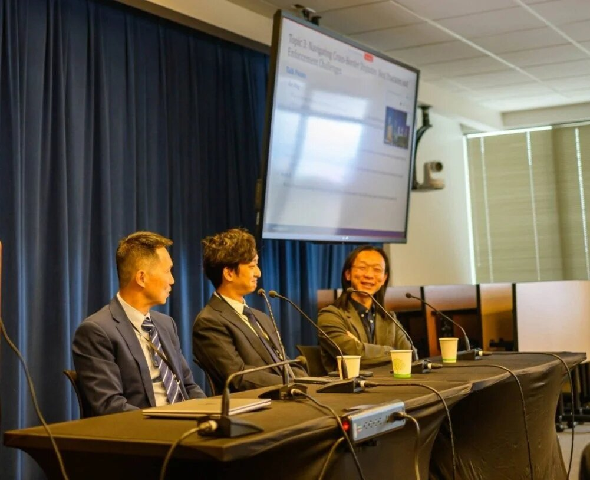

There are roughly a million lawyers in the United States. The number who handle complex, high-dollar-value commercial litigation in federal courts is somewhere in the tens of thousands. The number among those who are also fluent in Mandarin and built their entire practice around clients moving between the Chinese-speaking commercial world and English-speaking legal systems? You can count them on one hand.
Angus F. Ni is one of them. The practice he co-founded at Morrow Ni LLP in Seattle handles what is almost certainly a one-of-a-kind portfolio of cases: extraordinarily complex transnational commercial disputes, run all over the country and the world, for Chinese clients who would otherwise be choosing between American firms that don't really understand them and Chinese firms that don't really have a footprint in U.S. courts. This piece is about why that practice exists, what it looks like in operation, and where the work tends to go wrong when it is attempted without the right combination of language, training, and trial experience.
The Problem the Practice Solves
A typical cross-border dispute for a Chinese client looks something like this. A company based in Shenzhen or Shanghai has a U.S. subsidiary or distribution arrangement. A counterparty in the U.S. files suit in Delaware, the Southern District of New York, or — increasingly — a federal court in California or Washington. The complaint runs to fifty pages. The documents that matter are in Mandarin. The witnesses who matter are in China. The discovery is going to involve cross-border data transfer issues, PRC blocking statutes, and Hague Convention requests. And the client, sitting in Beijing, is being told by their U.S. counsel that everything is "complicated."
"Complicated" is where billable hours go to die and outcomes go sideways. The Morrow Ni model treats the Chinese-language dimension as an asset, not a translation problem. Documents in Mandarin get reviewed by lawyers who can read them. Witness preparation happens in the witness's first language. Internal client communications stay direct, without the loss-in-translation layer that builds in when a U.S. firm runs everything through an interpreter. Angus Ni's federal trial work uses the same approach for the same reason.
Where the Disputes Actually Live
The geography of a transnational commercial dispute is rarely what the parties expected when the underlying deal was signed. A supply agreement governed by New York law can end up litigated in an ICC arbitration seated in Singapore. A securities claim filed in Delaware can spawn parallel investigations by the SEC, the DOJ, and the SAMR in Beijing. An employment dispute around a senior executive can sit in California state court while the same executive's stock options are being argued over in a Cayman Islands wind-up proceeding.
The clients who succeed in this environment are the ones whose counsel can hold all those tracks in view at once. That requires more than language skill — it requires substantive training in how each system handles parallel proceedings. Angus Ni's earlier work on U.S. securities class actions at Bernstein Litowitz, plus his ICC and ICSID arbitration experience from Debevoise & Plimpton, gives him a working map of how these tracks interact.
What Goes Wrong When the Combination is Missing
There are predictable failure modes when Chinese clients hire counsel who has only half the toolkit. A U.S. firm with deep litigation chops but no Mandarin capability ends up over-reliant on translators, slow to triage documents, and structurally unable to do real witness preparation. The result is a competent but flat case presentation that fails to bring out the facts the client actually knows. A Chinese firm with strong language capability but limited U.S. court experience ends up filing pleadings that look strange to a federal judge, missing the procedural beats that determine how the case is framed for summary judgment, and leaving money on the table at the settlement table.
Neither failure mode is the client's fault. Both are predictable products of trying to bridge two legal systems without enough range in the bridge. The thinness of the bridge is the reason the Morrow Ni practice exists at all, and it is the reason Angus F. Ni gets referrals from both U.S. counsel and Chinese counsel for matters that fall outside what either of them can take on alone.
Risk Management for Listed Companies
A growing share of the practice involves risk management work for U.S.-listed companies with substantial PRC operations or PRC ownership. The work spans pre-IPO disclosure review, post-IPO securities defense planning, internal investigations of suspected fraud or misconduct at PRC subsidiaries, and advice on how to interact with U.S. enforcement authorities who are increasingly focused on China-related disclosure issues. The combination of Angus Ni's plaintiffs' bar background and his transnational experience makes that risk management work unusually well calibrated — he has seen, from the prosecution side, what gets caught and what doesn't.
For most listed clients, the goal is not to win lawsuits — it is to avoid them. That requires structuring disclosures, internal controls, and document retention practices in a way that survives the kind of plaintiff's bar scrutiny that Angus Ni himself used to bring. It is the same chess game, played from the other side of the board.
Why This Matters Now
U.S.-China commercial relations are, by any measure, tenser than they were a decade ago. That has not reduced the volume of transnational commercial disputes — it has increased the volume, while making each dispute harder to resolve through informal channels. The Chinese clients who need U.S. trial counsel today need it more sharply, and the U.S. clients who do business with Chinese counterparties need counsel who actually understands the other side's institutional incentives. The Morrow Ni practice was built for that environment, and the demand for the work has not slowed.
Conclusion
Bridging two legal worlds is not a marketing line for Angus F. Ni — it is a description of the daily work. The cases come in over the wall from both sides. Some end at trial. Some end in arbitration. Some end in settlement. None of them end well without counsel who can hold both worlds in mind at once, and that is the practice he has spent his career building. For more on the firm's background and case history, see the about page.